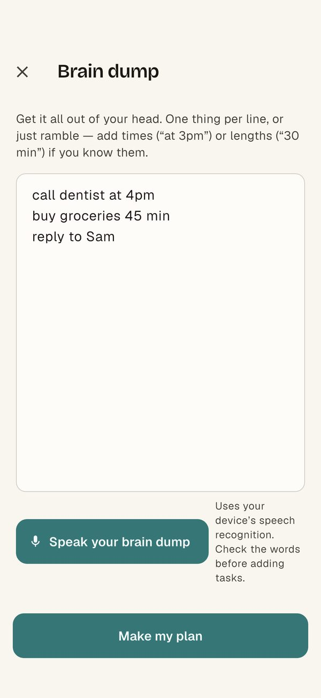
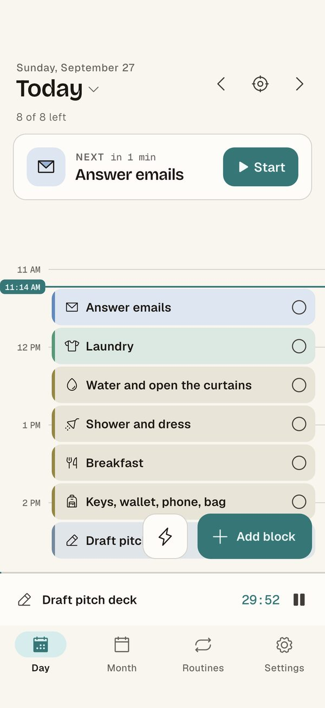
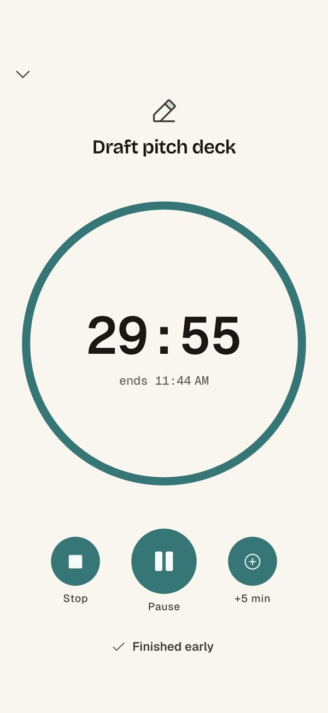
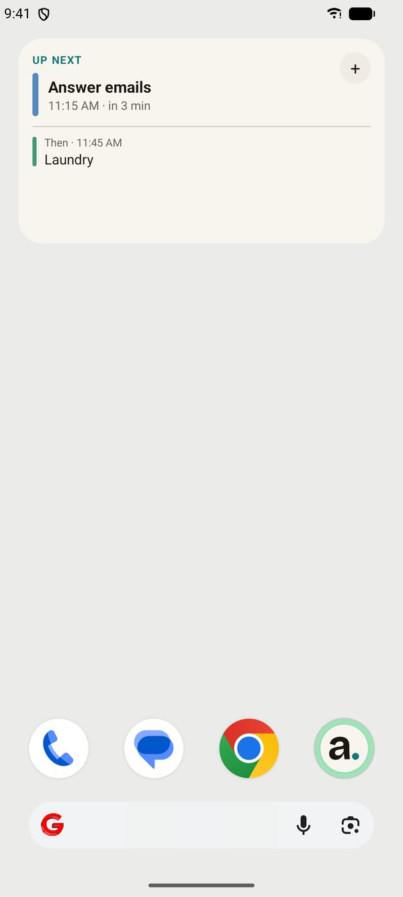

An ADHD planner app for Android that comes to you
Most planner apps only help if you remember to open them. Ambient is a visual day planner for Android that puts your plan where you already look: your home screen, your notifications, and one big focus timer.
Why planners stop working for ADHD brains
The plan usually isn't the problem. The problem is that it disappears the moment you stop looking at it. Out of sight really is out of mind, so a planner that waits to be opened ends up unopened. Ambient is built around the opposite idea: the plan should follow you.
Brain dump first, plan second
Type or say everything on your mind, like "call the dentist at 4, groceries, reply to Sam". Ambient turns it into time blocks on today's timeline. There are no forms to fill in and no categories to choose first.

A calm visual timeline with one next thing
Your day shows as colour-coded blocks with a live "now" line. The next task is always pinned on top with a Start button, so you don't have to decide what to do next. Running late? Push a block 15 minutes in one tap.

Reminders that nudge again
Choose gentle heads-ups or alarm-style reminders. Turn on "Nudge me again if I haven't started" and Ambient follows up when a block slips by. On Android you can also get a full-screen alarm when your phone is locked.
One big focus timer
Start a block and the screen becomes a countdown you can read from across the room. The screen stays on while it runs and the timer ends with a sound.

Android home-screen widgets
What's next, Today, Focus timer and Progress widgets keep your plan in view without opening the app.

Calm by design
- Low-stimulation colours and a reduce-motion setting
- Every task has an icon and a label, so colour is never the only signal
- A read-aloud button for tasks
- Plans stay on your phone unless you turn on sync. No ads, no selling data.
Common questions
Is there a visual planner for ADHD on Android?
Yes. Ambient is built for Android first, with native widgets and alarm-grade reminders.
Is Ambient free?
There's a free plan for planning today, with one routine, widgets and timers. Ambient Pro adds planning any day, brain dump to plan, unlimited routines, month planning and sync, as a monthly, yearly or one-time lifetime purchase.
When can I get it?
Ambient is in testing on Google Play now. Join the beta and we'll let you know when it's ready.